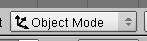
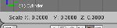
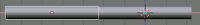
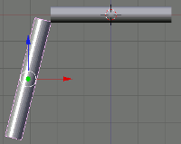
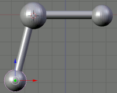
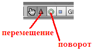

| № | Задание | Способ выполнения | Иллюстрация |
|---|---|---|---|
| 1 | Запустив Blender, удалить куб. | X, затем Enter. Или Delete, затем Enter. |
|
| 2 | Добавить на сцену цилиндр. | Пробел. Выбрать: Add -> Mesh -> Cylinder. Окно "Add Cylinder": нажать "OK". |
|
| 3 | Удостоверьтесь, что вы находитесь в объектном режиме. |  | |
| 4 | Уменьшить цилиндр по всем осям до 0.3 от прежних размеров. | Нажать S, затем, зажав Ctrl, двигать мышью пока значения в левом ниженем углу 3D-окна не станут равны 0.3. Закрепить, щелкнув левой клавишей мыши. |
 |
| 5 | Вид спереди. | 1 на NumLock. | |
| 6 | Увеличить цилиндр по оси Z в 7.5 раза. | Нажать S, затем Z, и, зажав Ctrl, двигать мышью пока значения в левом нижнем углу 3D-окна не станет равно 7.5. Закрепить, щелкнув левой клавишей мыши. |
|
| 7 | Повернуть цилиндр на 90 градусов по оси Y. | Нажать R, затем Y, и, зажав Ctrl, двигать мышью пока значения в левом нижнем углу 3D-окна не станет равно 90. Закрепить, щелкнув левой клавишей мыши. |
|
| 8 | Продублировать цилиндр. Копию переместить по оси X так, чтобы два цилиндра касались друг друга | Дублирование: Shift + D. X, затем перемещение с помощью мыши. |
 |
| 9 | Поскольку в молекуле воды угол связи H-O-H равен 104.5 градусов, то следует развернуть второй цилиндр по оси Y на 75.5 градусов (180-104.5). |
R, затем Y | |
| 10 | Совместить концы цилиндров. | Перемещать с помощью мыши за красную и синюю стрелки-оси. |  |
| 11 | Разместить 3D-курсор в точке соединения двух цилиндров | Щелчек левой клавишей мыши | |
| 12 | Добавить сферу (которая будет служить моделью атома кислорода | Пробел. Выбрать: Add -> Mesh -> UVSphere. Окно "Add UV Sphere": нажать "OK".< |
|
| 13 | Два раза продублировать сферу, а дубликаты перенести на концы цилиндров. | Дублирование: Shift + D. Перемещение с помощью мыши. |
 |
| 14 | Уменьшить крайние шары до значения 0.8 от первоначального. | S. Перемещение мыши при зажатом Ctrl. | |
| 15 | Объединить все элементы модели. | Выделение группы элементов: поочередный щелчок правой кнопкой мыши при зажатой клавише Shift. Объединение: Ctrl + J. |
|
| 16 | Переключиться на вид из камеры | 0 на NumLock. | |
| 17 | Откорректировать размещение модели на сцене | С помощью инструментов перемещения и поворота |  |
| 18 | Сохранить файл. | F2 |